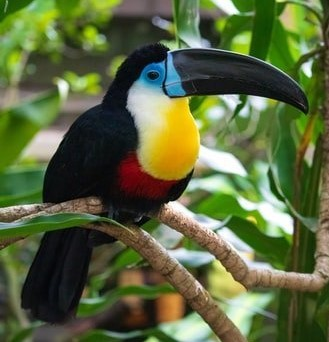

Time for Toucans.
An egg-citing species.
General Information
Toucans, or Ramphastidae for its latin equivalent, is perhaps the most commonly known tropical bird that are members of the passerine (perching) bird.
Appearance
Recognised for their colourful and large bills, these brightly marked birds have a wide range of plumage they take on.
Diet
Toucans are omnivores that eat insects, berries, fruits, lizards, rodents and even small birds!
Distribution
Toucans can be found in the Neotropics, such as Southern Mexico, Central America and South America. Toucans primarily live in forests.
Species
There are 40 species of toucans, such as the Toco toucan, Keel-billed toucan, Channel-billed toucan, and many more!
Toucan Fun Facts
Although its colourful bills and plumage might stand out to us, this serves as brilliant camoflauge in the tropics.
Toucans have the largest bills in the world!
To conserve heat, toucans sleep on their beaks as it regulates body temperature and blood flow.
These bils are surprisingly light despite their appearance! This is due to little air holes that prevent it from being so heavy.
The average lifespan of these birds is an impressive 20 years!
More Toucan Information
The toucan doesn't actually use its wings to fly much, rather it acts as a glider to get from one tree to the next, and prefers to hop from one branch to the next.
A toucan's beak is made of bone and the outer part is made of keratin.
A baby toucan is taken care of by the mother for 20 days and whilst it grows the characteristic bill forms.
Images
Flamingos are very good dancers as it is their mating ritual.
There can be up to thousands of flamingos in a colony in the wild.
Flamingos are serially monogamous by nature.
Flamingos don't breathe when they eat.